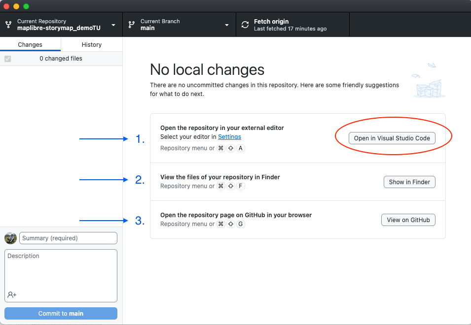

Clonar la plantilla de narración
En este taller vamos a duplicar la plantilla de narración creada por Digital Democracy a tu propia cuenta de GitHub, y luego haremos algunas ediciones juntos. Puedes modificar y reutilizar esta plantilla en cualquier momento desde tu propia cuenta.
1 Ve al repositorio Interactive Storytelling with MapLibre
2 Haz clic en la opción para abrir el repositorio en GitHub Desktop
Bajo el botón Code, verás una opción para Open with GitHub Desktop (Abrir con GitHub Desktop).
Confirma que deseas abrirlo haciendo clic en Open GitHub Desktop.app en el mensaje que aparece.

Alternativamente, si estás usando GitHub en la web, simplemente bifurca el repositorio a tu cuenta y continúa desde allí.
GitHub Desktop debería abrirse en tu computadora y deberías ver una ventana con la información del repositorio bifurcado, incluyendo un panel que lista los cambios (estará vacío ya que es la primera vez que lo abres) y tres opciones para comenzar a trabajar en tu repositorio:
Si tienes Visual Study Code instalado, deberías ver el texto Open in Visual Studio Code (Abrir en Visual Studio Code) en el botón de acción. Si no lo tienes pero tienes un editor diferente (como RStudio, XCode o Atom), entonces deberías ver esa opción. Si necesitas configurar Visual Studio Code como el editor predeterminado para tu GitHub Desktop, entonces sigue las instrucciones aquí.
-
Abrir el repositorio en tu editor externo.
-
Ver los archivos de tu repositorio en el Finder.
-
Abrir la página del repositorio en GitHub en tu navegador.
